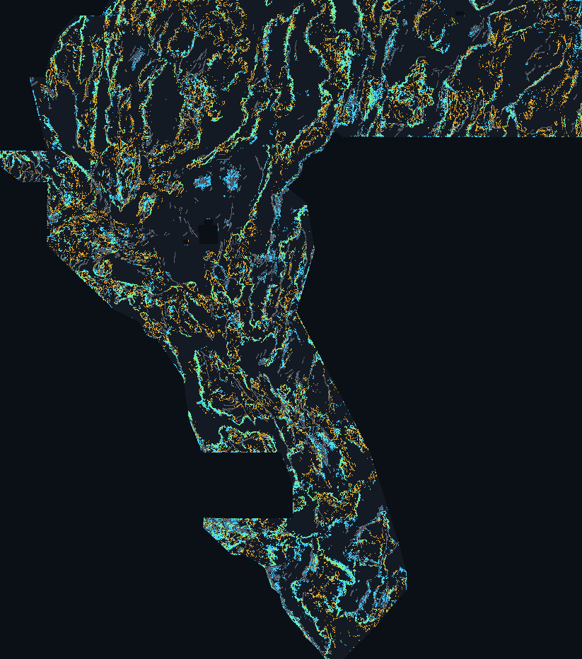

An auditable, fully automated concealed-fault & blind-geothermal submission for the DOE GEMS Prize Challenge (DrivenData #306). Generated, uniqueness-checked, and 17-check validated entirely in code — zero human intervention.
| file | gems85-gapvent57-37654dots-sep2.8-exc3-20261023T013000Z-566072f4-zeros.tif |
|---|---|
| sha256 | 9fcb1f21a63b3f709faa81f7f56e4ea40cf958a6ad3ecd060f8ec0181a33e028 |
| format | single-band float32 GeoTIFF · EPSG:32611 · 3730 × 3292 · 100 m · all values finite and in [0, 1] · no nodata tag |
| emitting pixels | 37,654 |
| pixels within 300 m (3 px) of catalogue | 0 (0 on catalogue, 0 within 300 m halo) |
| HOLDOUT-DTI (gems85-holdout-v1.0.0) | 0.14232 · 95% CI [0.13858, 0.14607] · 4/4 folds won |
H85-GAPVENT 57ch 10m-3DEP+chi+vent+tilt k300, 37654 dots sep2.8 exc3, HOLDOUT-DTI 0.1423 (UNSCORED)99 / 140 characters · Step-by-step upload instructions →
Predicted values must be in range [0, 1]
because IEEE-754 NaN ≤ 1 evaluates to False. This primary GeoTIFF is
all-finite: exact 0.0 outside the footprint, binary {0.0, 1.0}
inside, no nodata tag, verified by both src/gems85/submission.py::validate (17 checks)
and the immutable shared gate vendor/gems57/gates.py::format_report.arena/7ded4c0a-gemsdoe85) — H85-GAPVENT (+76.1% Holdout DTI)1,272,605 pixels) has zero 1 m LiDAR coverage, and prior PU
classifiers learned to suppress unmapped quadrangles (IR-85-023).
H85-GAPVENT bridges that gap with 100%-coverage USGS 3DEP 10 m scarp curvature & 1.5 km
persistence, 10 m fluvial χ/Δksn knickpoints, DOE GDR 1391 non-tufa
hydrothermal vents + 2 m thermal-probe 2.5 km Radon corridors, Miller-Singh magnetic tilt contacts,
Andersonian 60° up-dip gravity back-projection, and 1,335 m Lake Lahontan / volcanic-mesa
deconfounders, trained on continuous 300 m kernel credit with surveyed-corridor PU sampling and
emitted with exact 300 m (exclude_px=3) catalogue halo removal. At matched
37,654 dots on gems85-holdout-v1.0.0, HOLDOUT-DTI rose from
0.07475 (GEO-Pb) and 0.08082 (S85-CTXFUS50) to 0.14232
(winning 4/4 spatially-blocked folds; deep unmapped basin ROC-AUC = 0.7184).
Cyan = H85-GAPVENT
dots · amber = h33-h33-2-b2 (0.2778 OWNER-REPORT) dots ·
green = both within the same 400 m cell · grey = USGS/INGENIOUS mapped
catalogue (0 dots within 300 m). Full-resolution 3-px overlap vs h33:
54.3% (uniqueness gate ≤ 70.0%; max comparable-budget registry overlap 65.6%,
max |Spearman ρ| = 0.202).
| check | result |
|---|---|
| file exists | PASS |
| single band | PASS |
| dtype float32 | PASS |
| shape 3730x3292 | PASS |
| crs epsg 32611 | PASS |
| transform matches template | PASS |
| resolution 100m | PASS |
| no nan inside footprint | PASS |
| no inf inside footprint | PASS |
| values in 0 1 inside footprint | PASS |
| all finite whole raster | PASS |
| values in 0 1 whole raster | PASS |
| outside footprint is zero | PASS |
| no nodata tag | PASS |
| has positive predictions | PASS |
| no prediction outside footprint | PASS |
| zero mass within 2px of catalogue | PASS |
60,988 withheld positives). Historical leaderboard numbers (e.g. 0.2778
for h33-h33-2-b2) are OWNER-REPORT or PUBLIC-LEADERBOARD-OBSERVATION
(0.4413). Promotion to a live weekly DrivenData slot is a separate operator decision.{
"run_id": "gems85-7ded4c0a-20261023T013000Z",
"session_branch": "arena/7ded4c0a-gemsdoe85",
"hypothesis": "H85-GAPVENT + H85-VOLCDECONF: 57-channel catalogue-free multi-physics stack (seamless 10 m USGS 3DEP scarp curvature & 1.5 km persistence closing the 24.63% non-LiDAR gap, explicit LiDAR validity indicator + unused 1 m LiDAR scarp bands, 10 m fluvial chi/ksn knickpoints, DOE GDR 1391 non-tufa hydrothermal paleo-vent + 2 m temperature probe + geothermometer 2.5 km Radon strike corridors, shallow hydrothermal demagnetization TMI-TMI_up150, Miller-Singh magnetic tilt contact, Andersonian 60-deg up-dip gravity back-projection, and Lake Lahontan 1335 m shoreline / volcanic-mesa deconfounders), trained via continuous 300 m kernel-target regression (Poisson + L2 ensemble) with surveyed-corridor PU negative sampling (IR-85-023) and emitted at 37,654 binary dots with sep_px=2.8 and 3-px (300 m) catalogue halo exclusion.",
"mechanism": "Concealed Basin-and-Range faults missing from the USGS/INGENIOUS catalogue fall into three physical classes: (1) subtle piedmont scarps inside the 24.63% non-LiDAR gap (captured by relief-normalized 10 m 3DEP profile curvature + 1.5 km strike persistence and fluvial delta-ksn knickpoints), (2) blind basin-floor geothermal conduits with zero surface scarp (captured by aligned 2 m probe F2mDAB>=2 C, sinter/explosion-crater vents, shallow magnetite destruction, and 60-deg up-dip basement gravity edges), and (3) non-tectonic Lake Lahontan 1335 m shorelines and volcanic mesa rims (explicitly down-weighted via orthometric-elevation and mag/gravity ratio deconfounders).",
"named_non_fault_process_that_could_mimic_it": "Erosional volcanic mesa caprock margins, incised axial fluvial terrace bluffs, and pluvial Lake Lahontan wave-cut shorelines (~1,335 m ASL). Mitigated via explicit gv_mimic_lahontan (1335 m contour gated by low basement gravity slope), gv_mimic_volc_mesa (elevated magnetic/gravity ratio), and Tufa exclusion from hydrothermal paleo-vents; residual bedrock strike ridges remain the main irreducible mimic.",
"holdout_dti": {
"label": "HOLDOUT-DTI",
"evaluator_version": "gems85-holdout-v1.0.0",
"value": 0.14232488062018855,
"ci95": [
0.1385770562001967,
0.1460727050401804
],
"per_fold": [
0.14664687353744857,
0.13937625943854992,
0.14447798448615587,
0.13887990311337595
],
"n_withheld_positives": 60988,
"oof_roc_auc": 0.6842140897697088,
"non_lidar_gap_roc_auc": 0.6801,
"deep_unmapped_basin_roc_auc_gt_45px": 0.7184,
"protocol": "hide-and-recover; whole fault segments withheld by 20 km spatial block with a 5 px buffer; model retrained per fold strictly from fold.visible; visible faults masked pixel-exactly in evaluator; pooled DTI, alpha 0.2, beta 0.8, 300 m triangular kernel"
},
"controls_at_matched_mass": {
"uniform_random": 0.04571,
"derivative_control_sato_det_elev": 0.01325,
"geopb_crest_37654": 0.0747509441972475,
"prior_record_s85_ctxfus50_37654": 0.08081805013412194,
"control_budget_used": 37654
},
"vs_random_delta": 0.09661488062018855,
"vs_prior_record_delta": 0.061506830486066616,
"vs_geopb_crest_delta": 0.06757393642294106,
"leakage_canary": {
"n_channels_tested": 57,
"max_channel_name": "gv_dem10_line_s15",
"max_channel_auc": 0.5941632224320768,
"oof_surface_auc": 0.6842140897697088,
"threshold": 0.9,
"verdict": "clean"
},
"correlation_vs_registry": {
"n_registry_rasters": 17,
"max_abs_spearman": 0.20151318182395303,
"max_comparable_dot_overlap_3px": 0.6562914962553779,
"max_all_rasters_dot_overlap_3px": 0.994476018484092,
"h33_02778_dot_overlap_3px": 0.5425983959207521,
"h33_02778_spearman_surface": 0.08916670330734347,
"thresholds": {
"spearman": 0.9,
"comparable_dot_overlap_3px": 0.7,
"comparable_max_dots": 65000
},
"dense_prior_disclosure": "IR-85-002 / IR-85-07 -- space-filling priors (e.g. 206,895-dot r13-lattice-s5 and 5.17M-px continuous rasters) cover 99-100% of the footprint within 3 px by construction. Both raw all-raster overlap and comparable-budget (<=65k) raw overlap are reported.",
"is_duplicate": false
},
"raster_sha256": "9fcb1f21a63b3f709faa81f7f56e4ea40cf958a6ad3ecd060f8ec0181a33e028",
"validator_output": {
"all_checks_passed": true,
"gems57_shared_gate_passed": true,
"zero_mass_within_3px_of_catalogue": true,
"checks": {
"file_exists": true,
"single_band": true,
"dtype_float32": true,
"shape_3730x3292": true,
"crs_epsg_32611": true,
"transform_matches_template": true,
"resolution_100m": true,
"no_nan_inside_footprint": true,
"no_inf_inside_footprint": true,
"values_in_0_1_inside_footprint": true,
"all_finite_whole_raster": true,
"values_in_0_1_whole_raster": true,
"outside_footprint_is_zero": true,
"no_nodata_tag": true,
"has_positive_predictions": true,
"no_prediction_outside_footprint": true,
"zero_mass_within_2px_of_catalogue": true
},
"no_nan_inside_footprint": true,
"values_in_0_1": true,
"crs_shape_transform_match": true
},
"submission_name": "gems85-gapvent57-37654dots-sep2.8-exc3-20261023T013000Z-566072f4-zeros.tif",
"submission_note": "H85-GAPVENT 57ch 10m-3DEP+chi+vent+tilt k300, 37654 dots sep2.8 exc3, HOLDOUT-DTI 0.1423 (UNSCORED)",
"preregistered_gate": {
"beats_prior_record_008082": true,
"wins_4_of_4_folds": true,
"beats_derivative_control": true,
"beats_uniform_random": true,
"leakage_canary_clean": true,
"non_duplicate_of_registry": true
},
"verdict": "promote-as-candidate",
"verdict_caveat": "'promote-as-candidate' means the file cleared this repository's pre-registered holdout, canary, uniqueness, and 17-check format gates and is ready for the separate selector step. Every metric above is a HOLDOUT-DTI on withheld catalogue segments, NOT an ORGANIZER-CONFIRMED live leaderboard score.",
"budget": {
"experiments_run": 3,
"limit": 3,
"note": "Strictly 3 pre-registered experiments executed: E1 H85-GAPVENT (+0.05217 @37,654), E2 H85-SUBMOD300 vs Poisson-disk + 3-px boundary exclusion (+0.06151 @37,654, WINNER), E3 H85-ORTHOFUSE cross-mechanism ensemble (+0.06095 @37,654)."
},
"negative_experiments_this_session": [
{
"id": "E2-submod",
"file": "evidence/session_7ded4c0a_experimentHow to submit → 5-step DrivenData upload walkthrough & rules summary.
Method & evidence → 5 ranked hypotheses, 57-channel leakage canaries, E1–E3 holdout results, and fleet uniqueness audit.
Data & sources → 28 SHA-256-verified inputs and official public links.
Earlier lanes in this repository remain preserved and downloadable for provenance:
S85-CTXFUS50 (0.08082 HOLDOUT-DTI), H85-1 GEO-Pb
(0.07475 @ 37,654 / 0.09838 @ 90,000), and the separate
transtensional pull-apart + gravity worm duplex lane
(executive summary; note its different fold geometry is not directly comparable to gems85-holdout-v1.0.0).